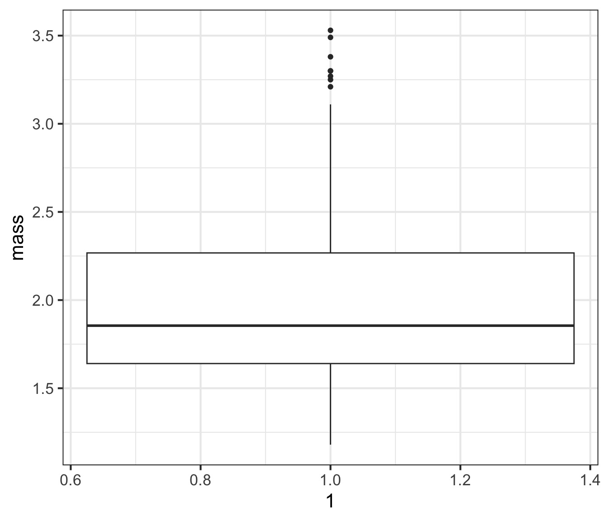

Making Data Tell its Story
Where are we going?

Groups of Topics
Our Data
Cleaning and Filtering our Data
Summarizing counts functionally!
How do we summarize our data?
The split-apply-combine philosophy
How much does one salmon weigh?

Weight: 3.09kg
How much do these salmon weigh?

3.09, 2.91, 3.06, 2.69, 2.88, 2.98, 1.61, 2.16, 1.56, 1.76
What can we say about the weights of all of these salmon?

Pair up with someone and come up all of the information you can think of that would summarize this population.
Our Data

Groups of Topics
Our Data
Cleaning and Filtering our Data
Summarizing counts functionally!
How do we summarize our data?
The split-apply-combine philosophy
What Data Do We Want?

What Data Do We Want? Adults!

Our Hero…

Filtering
# A tibble: 74 × 3
mass river mass_class
<dbl> <chr> <fct>
1 3.09 a (2.75,3.14]
2 2.91 b (2.75,3.14]
3 3.06 c (2.75,3.14]
4 2.69 d (2.35,2.75]
5 2.88 e (2.75,3.14]
6 2.98 f (2.75,3.14]
7 2.16 b (1.96,2.35]
8 3.3 f (3.14,3.53]
9 3.25 e (3.14,3.53]
10 2.18 f (1.96,2.35]
# ℹ 64 more rowsFiltering
# A tibble: 38 × 3
mass river mass_class
<dbl> <chr> <fct>
1 3.09 a (2.75,3.14]
2 1.61 a (1.57,1.96]
3 1.91 a (1.57,1.96]
4 2.13 a (1.96,2.35]
5 1.53 a [1.18,1.57]
6 1.75 a (1.57,1.96]
7 1.76 a (1.57,1.96]
8 1.72 a (1.57,1.96]
9 2.29 a (1.96,2.35]
10 1.74 a (1.57,1.96]
# ℹ 28 more rowsLogical Operators

Many Filters
# A tibble: 4 × 3
mass river mass_class
<dbl> <chr> <fct>
1 3.09 a (2.75,3.14]
2 3.04 a (2.75,3.14]
3 3.11 a (2.75,3.14]
4 3.05 a (2.75,3.14]Groups of Topics
Our Data
Cleaning and Filtering our Data
Summarizing counts functionally!
How do we summarize our data?
The split-apply-combine philosophy
Counting
# A tibble: 1 × 1
n
<int>
1 228Nesting Functions: Ugly! Hard to Read!
# A tibble: 1 × 1
n
<int>
1 4Introducing The Pipe
# A tibble: 1 × 1
n
<int>
1 4Sidebar - the pipe!
Sidebar - the pipe!

Pipes pass an object as the first argument to a function
[1] 9# A tibble: 1 × 1
n
<int>
1 228Pipes and Functional Programming
- We often thing in terms of do this, then then, then this
- Programming that way requires overwriting a lot of objects
- It gets…. messy
Functional Programming Workflow
Functional Programming Can get Verbose
Pipes Make Programs Read Like Language!
Groups of Topics
Our Data
Cleaning and Filtering our Data
Summarizing counts functionally!
How do we summarize our data?
The split-apply-combine philosophy
Summary Properties of a Sample
Measures of Central tendency: Mean, Median, Mode
Measures of Variation: Standard Deviation, Percentiles
Measures of Precision of Estimating the Above: Standard Error
Central Tendancy: Mean
\(\large \bar{Y}\) - The average
value of a sample
\(y_{i}\) - The value of a measurement
for a single individual
n - The number of individuals in a sample
Median - Dead Center
[1] 1.56 1.61 1.76 2.16 2.69 2.88 2.91 2.98 3.06 3.09good for non-normal data
[1] 1.855Central Tendancies

What about population-level variability?

What about population-level variability? 2/3 of the population is within 1SD

What is the range of 2/3 of the population?
Sample Properties: Variance
How variable was that population? \[\large s^2= \frac{\displaystyle \sum_{i=1}^{n}{(Y_i - \bar{Y})^2}} {n-1}\]
- Sums of Squares over n-1
- n-1 corrects for both sample size and sample bias
- Units in square of measurement…
Sample Properties: Standard Deviation
\[ \large s = \sqrt{s^2}\]
- Units the same as the measurement
- If distribution is normal, 67% of data within 1 SD
- 95% within 2 SD
Visualizing Measures of Variability
Variability: Quantiles/Percentiles and Quartiles
[1] 1.56 1.61 1.76 2.16 2.69 2.88 2.91 2.98 3.06 3.09Quantiles:
5% 10% 50% 90% 95%
1.4270 1.5300 1.8550 2.9430 3.0865 Quartiles (quarter-quantiles):
0% 25% 50% 75% 100%
1.1800 1.6400 1.8550 2.2675 3.5300 Boxplots

Boxplot of One Population

Boxplot of Many Populations

Meh, I still like ridgelines

Groups of Topics
Our Data
Cleaning and Filtering our Data
Summarizing counts functionally!
How do we summarize our data?
The split-apply-combine philosophy
Where are we going?
Split-Apply-Combine
Filtering and working with one chunk of the data is not enough
We often want to summarize information about many groups
Split-Apply-Combine

Two Questions
What is the mean and variation of salmon by river?
For each size class of salmon, how many are in each river?
What do we need to know to learn about rivers?
Start with the data
The group_by() function
Summarizing
Show the result(yes, this could have been piped)
# A tibble: 6 × 3
river mean_mass sd_mass
<chr> <dbl> <dbl>
1 d 1.89 0.450
2 e 1.98 0.491
3 c 2.04 0.548
4 f 2.04 0.612
5 b 2.10 0.608
6 a 2.11 0.511Other way! Descending
# A tibble: 6 × 3
river mean_mass sd_mass
<chr> <dbl> <dbl>
1 a 2.11 0.511
2 b 2.10 0.608
3 f 2.04 0.612
4 c 2.04 0.548
5 e 1.98 0.491
6 d 1.89 0.450What can we do with this?

What about mass class per river?
Mass Classes from cut_interval()
# A tibble: 228 × 3
mass river mass_class
<dbl> <chr> <fct>
1 3.09 a (3.06,3.53]
2 2.91 b (2.59,3.06]
3 3.06 c (3.06,3.53]
4 2.69 d (2.59,3.06]
5 2.88 e (2.59,3.06]
6 2.98 f (2.59,3.06]
7 1.61 a [1.18,1.65]
8 2.16 b (2.12,2.59]
9 1.56 c [1.18,1.65]
10 1.76 d (1.65,2.12]
# ℹ 218 more rowsOK, What next for count by class and river?
A Plan of Attack
Let’s do it with n()
Ungrouping to cleanup
Visualize our Result

A Solid Workflow!
If we have time - let’s see it live!
What are things you want to know about different rivers in the salmon data?
What are things you want to know about different size classes in the salmon data?